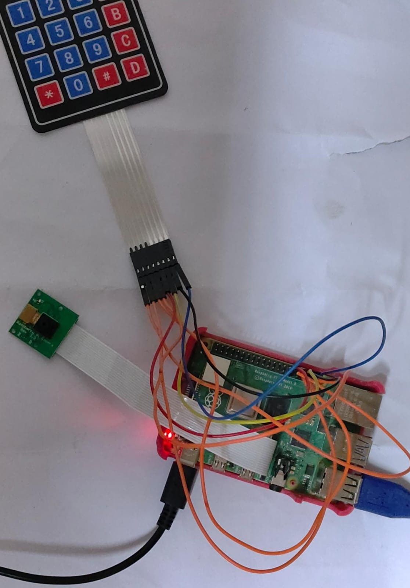

Intruder Capture System - Capture and upload photos on authentication failure [Nov 2023 (1 month)]
Project

You can find the project's GitHub repository
here.
It is an IoT project that authenticates a user with a 4x4 matrix keypad. If a wrong code is entered, the
connected camera module captures an image and publishes it to the MQTT broker.
The control center receives the uploaded image by subscribing to the broker.
We used a Raspberry Pi 4B, a 4x4 matrix keypad and camera module.
Find the
presentation,
and
report here.
Process:
1) Download the repo using "git clone https://github.com/SuchitReddi/ics.git"
2) Run "bash setup.sh"
3) Run "bash ics.sh" on control center (receiver) first, and then on intruder capture system
(authentication device).
Note:
This project is developed on a raspberry pi. So, this is tested on linux. Some of the commands might not work
on other operating systems.